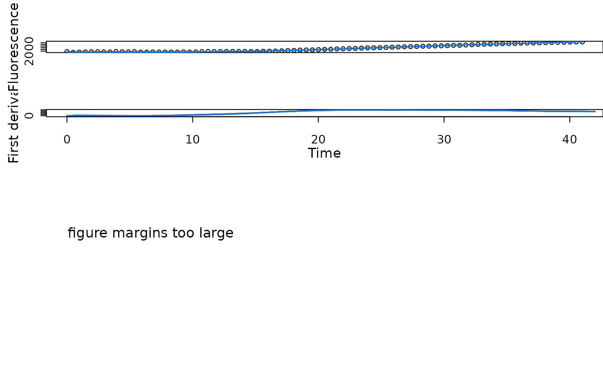

fl.gcBootSpline resamples the fluorescence-'x' value pairs in a dataset with replacement and performs a spline fit for each bootstrap sample.
Usage
flBootSpline(
time = NULL,
growth = NULL,
fl_data,
ID = "undefined",
control = fl.control()
)Arguments
- time
Vector of the independent variable: time (if
x_type = 'time'infl.controlobject.- growth
Vector of the independent variable: growth (if
x_type = 'growth'infl.controlobject.- fl_data
Vector of dependent variable: fluorescence.
- ID
(Character) The name of the analyzed sample.
- control
A
fl.controlobject created withfl.control, defining relevant fitting options.
Value
A gcBootSpline object containing a distribution of fluorescence parameters and
a flFitSpline object for each bootstrap sample. Use plot.gcBootSpline
to visualize all bootstrapping splines as well as the distribution of physiological parameters.
- raw.x
Raw time values provided to the function as
time.- raw.fl
Raw growth data provided to the function as
data.- ID
(Character) Identifies the tested sample.
- boot.x
Table of time values per column, resulting from each spline fit of the bootstrap.
- boot.fl
Table of growth values per column, resulting from each spline fit of the bootstrap.
- boot.flSpline
List of
flFitSplineobject, created byflFitSplinefor each resample of the bootstrap.- lambda
Vector of estimated lambda (lag time) values from each bootstrap entry.
- max_slope
Vector of estimated max_slope (maximum slope) values from each bootstrap entry.
- A
Vector of estimated A (maximum fluorescence) values from each bootstrap entry.
- integral
Vector of estimated integral values from each bootstrap entry.
- bootFlag
(Logical) Indicates the success of the bootstrapping operation.
- control
Object of class
fl.controlcontaining list of options passed to the function ascontrol.
See also
Other fluorescence fitting functions:
flFitSpline(),
flFit()
Examples
# load example dataset
input <- read_data(data.growth = system.file("lac_promoters_growth.txt", package = "QurvE"),
data.fl = system.file("lac_promoters_fluorescence.txt", package = "QurvE"),
csvsep = "\t",
csvsep.fl = "\t")
#> Sample data are stored in columns. If they are stored in row format, please run read_data() with data.format = 'row'.
# Extract time and normalized fluorescence data for single sample
time <- input$time[4,]
data <- input$norm.fluorescence[4,-(1:3)] # Remove identifier columns
# Perform linear fit
TestFit <- flBootSpline(time = time,
fl_data = data,
ID = 'TestFit',
control = fl.control(fit.opt = 's', x_type = 'time',
nboot.fl = 50))
plot(TestFit, combine = TRUE, lwd = 0.5)
